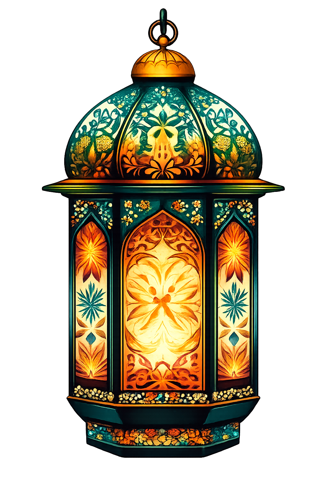
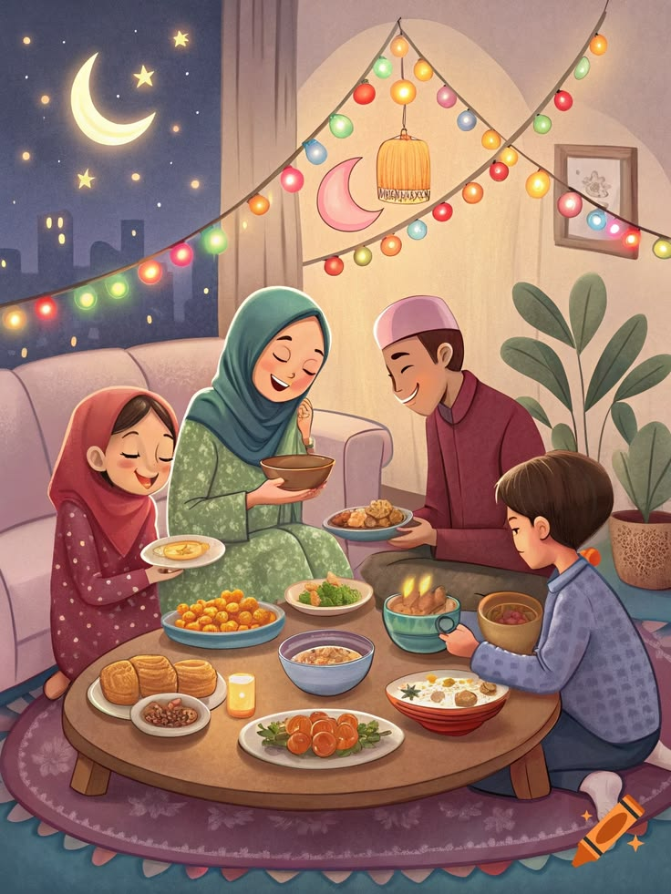
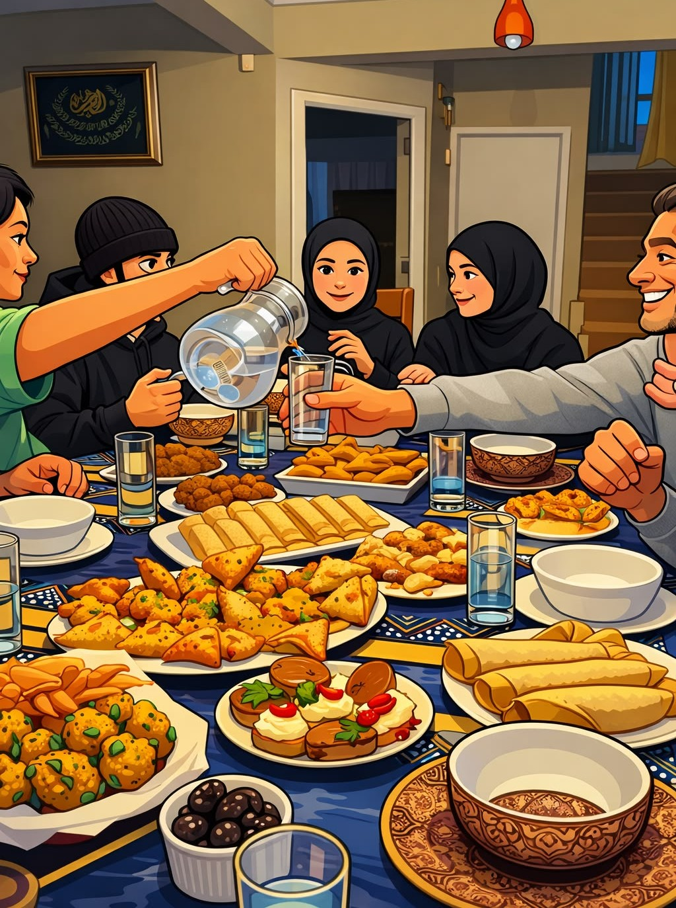
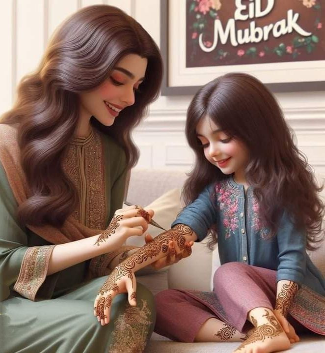
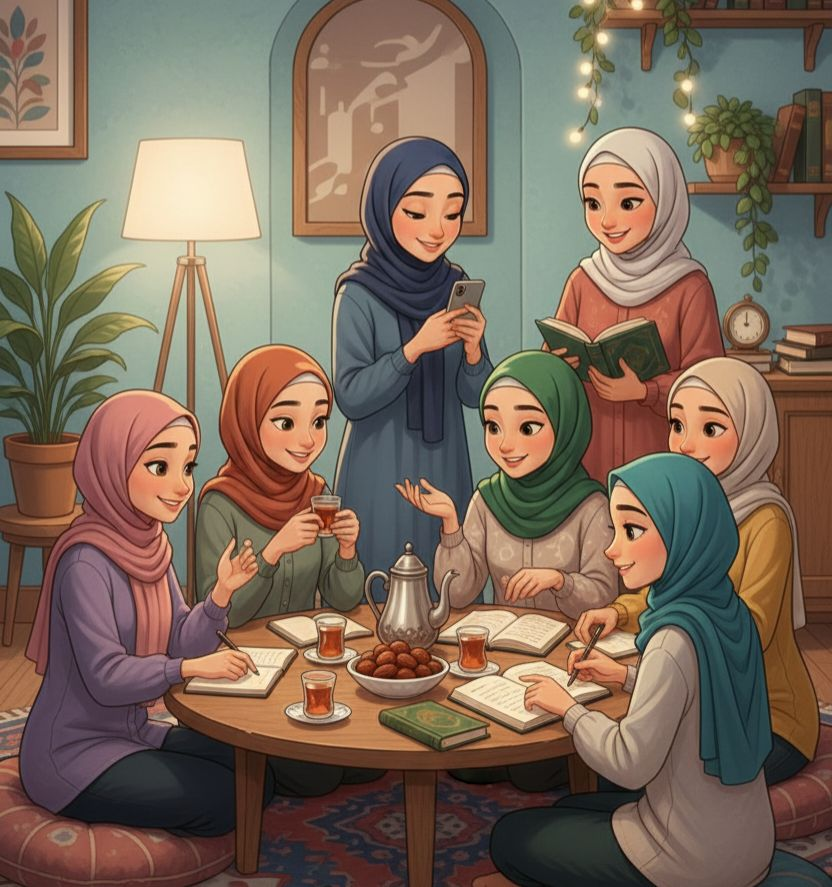
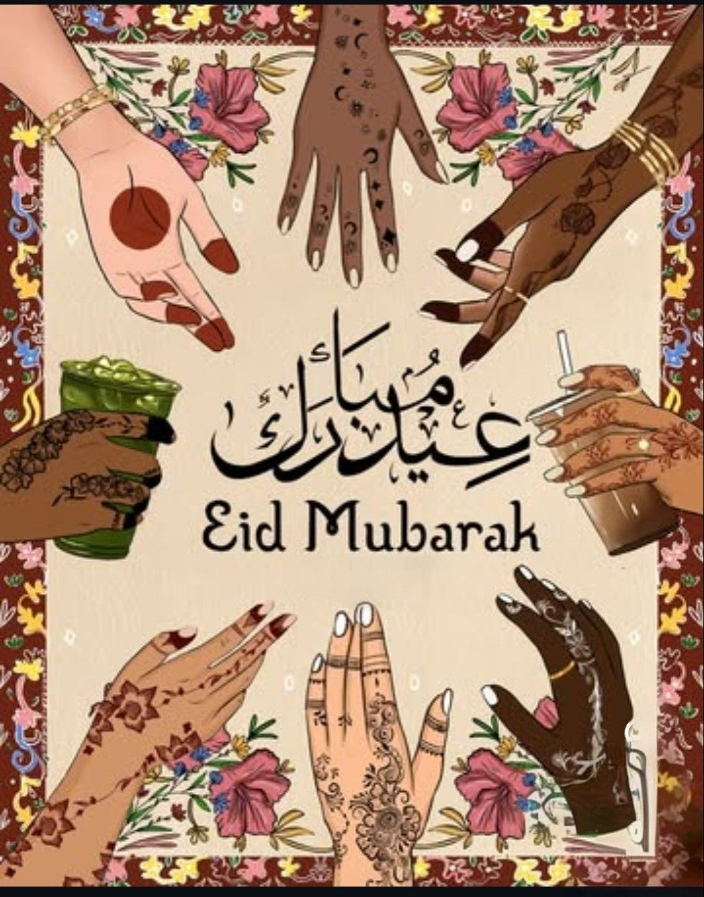
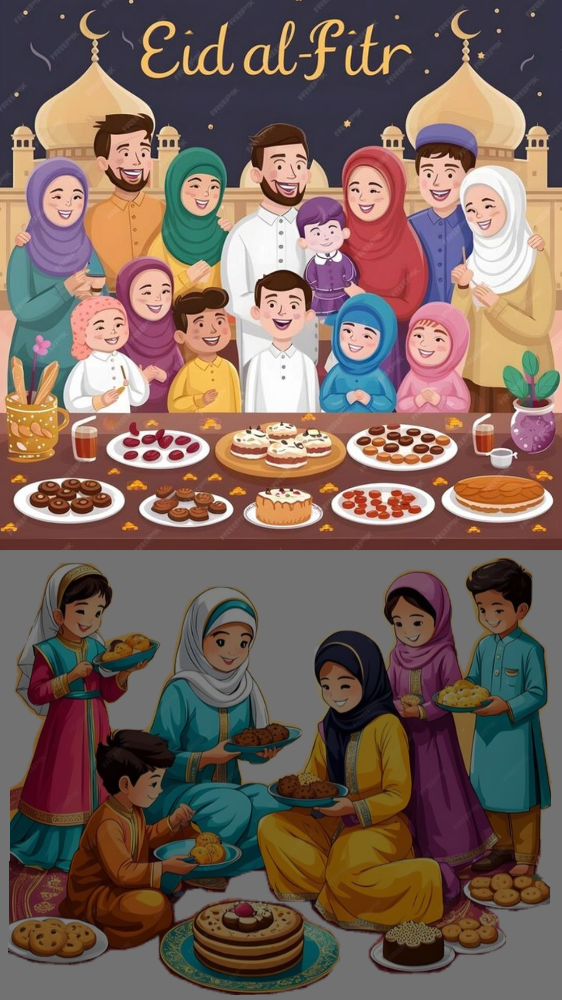
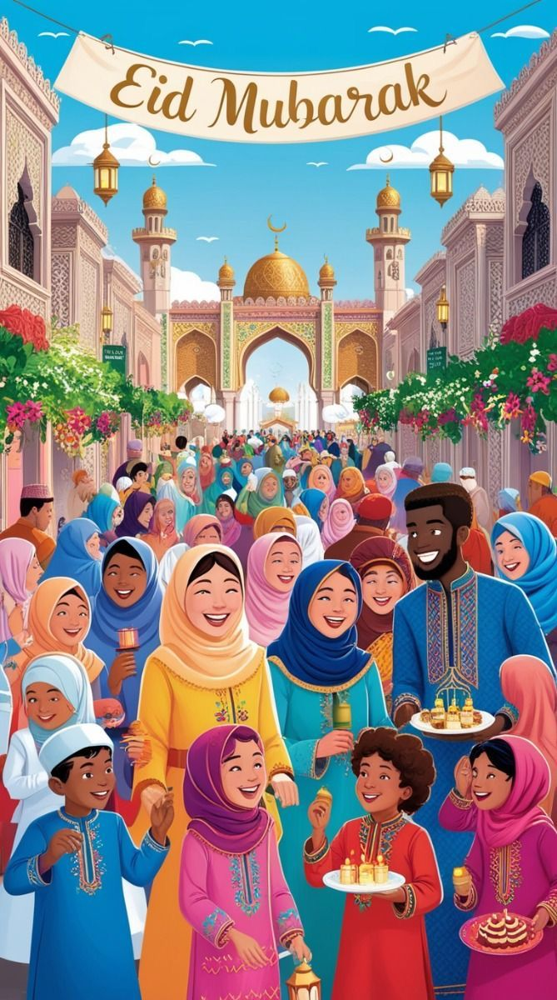

Eid al-Fitr marks the end of Ramadan, the holy month of fasting in Islam. It is a celebration of gratitude, generosity, prayer, and unity. Muslims gather for special prayers, give charity (Zakat al-Fitr), and celebrate with loved ones.



Finally, it’s Eid day! In the morning we take a shower and wear new dresses, do some makeup and eat something sweet or any Eid food. In the meantime the male figures go to the mosque and pray Eid prayer as a big group. After that they come back and have some sweets. Children and younger people get Eidi (money as gift) from their elders and wish them Happy Eid Day or simply by saying “Eid Mubarak”. I get eidi from my parents' relatives and in the afternoon starts with real feasting. So many types of rich foods and soda for celebrating, we used to visit our relatives and they visited our home to do Eid together. Sometimes me and my cousins went outside to hang out such as in a park or any Eid fairs. This celebration of Eid lasts for days and people from across the world celebrate it and enjoy themselves as muslims with much joy and pleasure.



